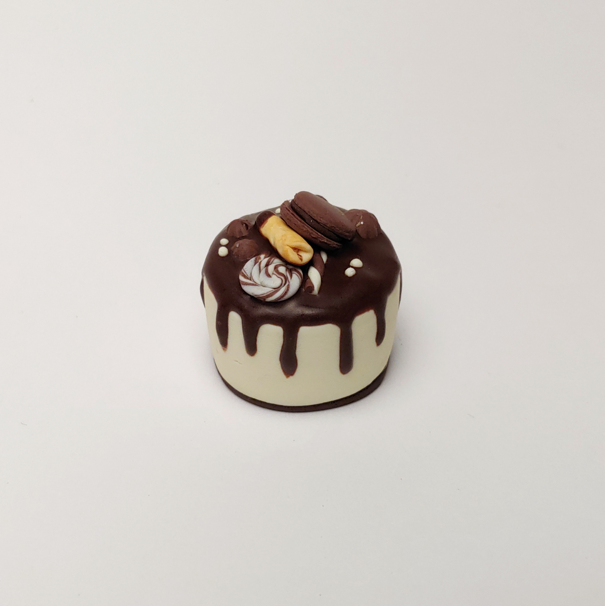
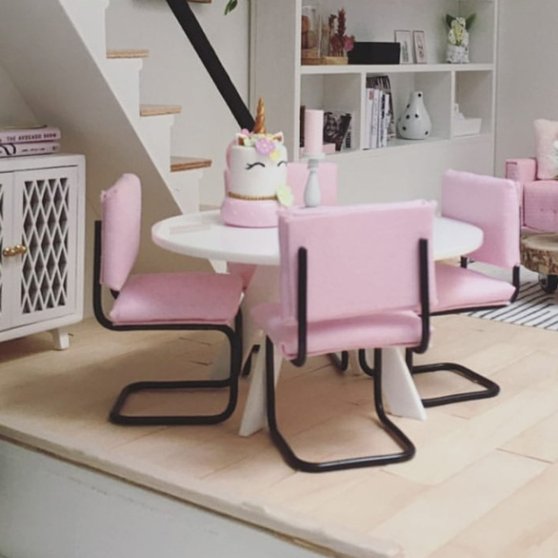
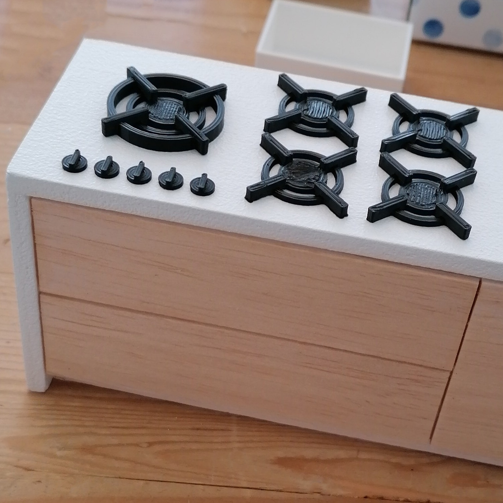
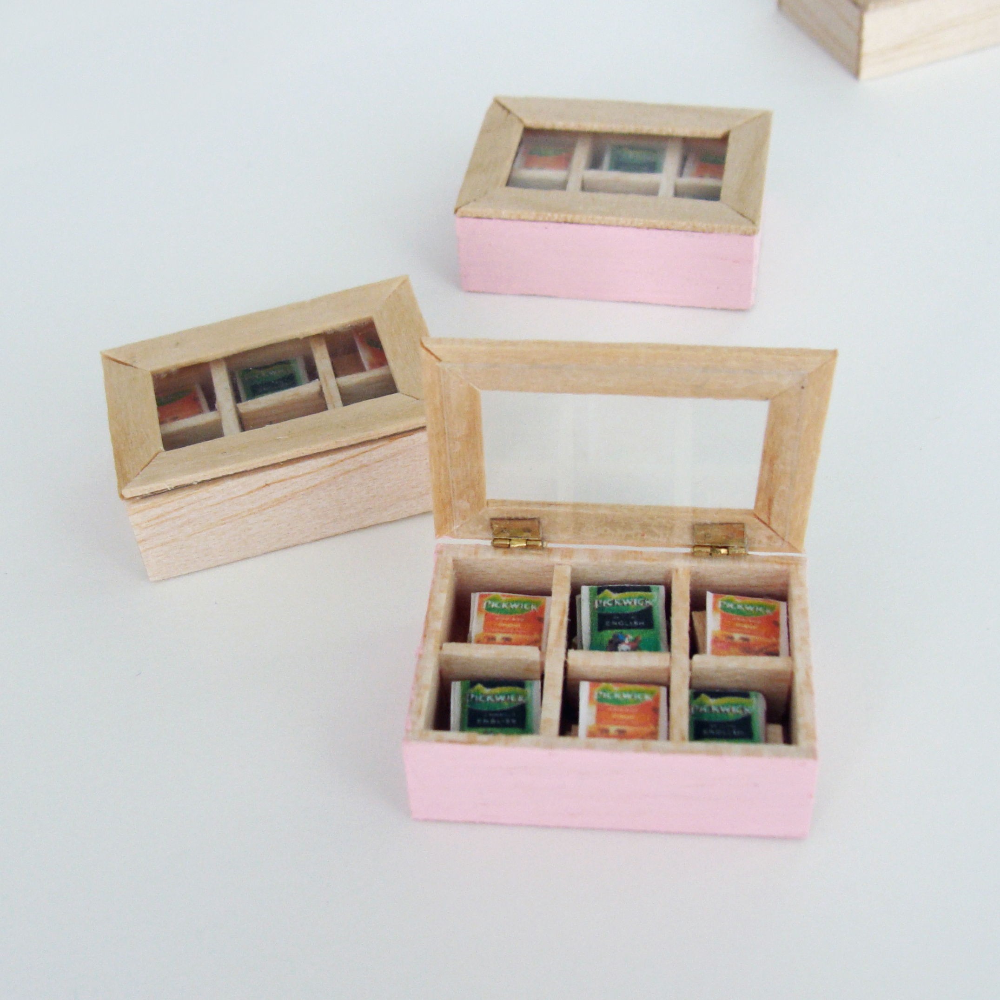

het begin
Al jaren was ik op zoek naar een poppenhuis voor mijn dochter. Maar nooit kwam ik een leuke tegen. Tot ik in 2019 een poppenhuisje bij de kringloop winkel vond. Ik heb de vloerbedekking, behang en trap er uitgehaald en ben gaan schuren, verven, behangen en meubels maken. Wat bleek, het huis was veel te klein voor de schaal 1:12 buisframe stoeltjes die ik had gemaakt. Maar de stoeltjes zelf werden enthousiast onthaald op de Facebook site waar ik ze op gedeeld had. Er kwam een berichtje binnen of ik ze ook verkocht. Daar had ik nog niet over nagedacht, maar waarom ook niet. En na het eerste setje volgden er al snel meer opdrachten. Dat was het begin van Huisje Josje
-
taartjes van fimo-klei
-
stoeltjes en andere meubels
-
3d prints
Ik maak onder andere:
Alles wat ik maak is met veel liefde en aandacht gebeurd. Ieder item is daardoor uniek.
Dat zie je, en dat voel je.
   